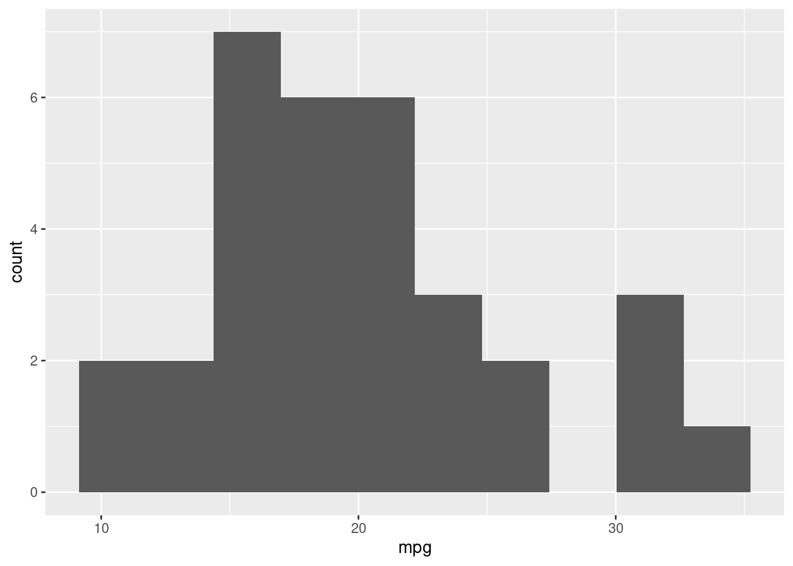
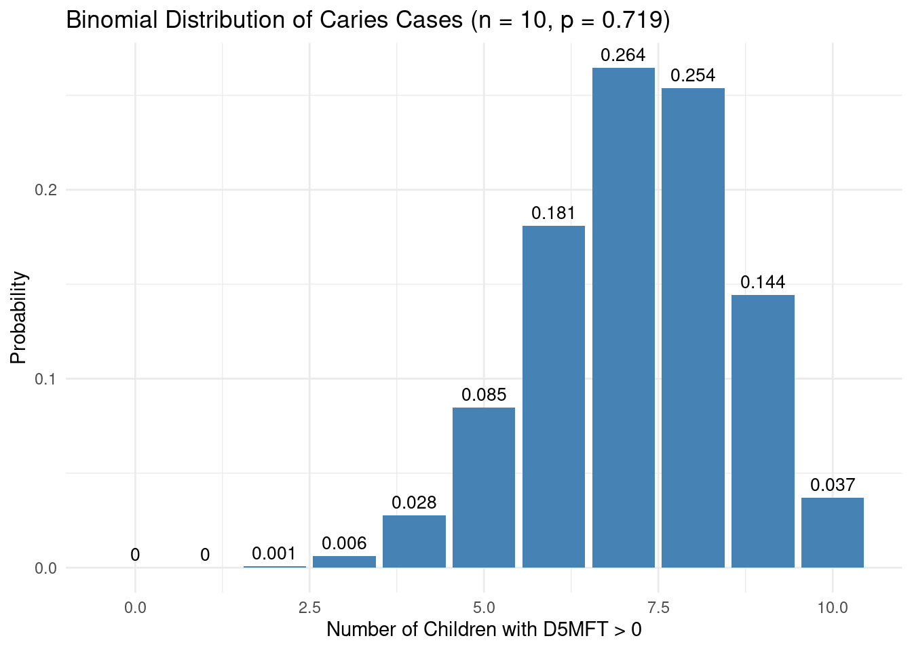

pacman::p_load(tidyverse, here, janitor)06_stats
Stats
Descriptive: describe and summarize data
Inferential: use a sample data to make inferences about a larger population
Types of data
Numeric (quantative): continuos or discrete
Categorical (qualitative): nominal or ordinal
Measures of center
mean,
median,
mode
# mean(sleep_data$sleep_hours)
# median(sleep_data$sleep_hours)Measures of spread
variance, sd (penalize longer distances), mean absolute deviation (MAD) (dont penalize longer distance)
quartiles, quantile, IQR
EXCERCISES
Load the dataset and explore its structure.
data("mtcars")glimpse(mtcars)Rows: 32 Columns: 11 $ mpg <dbl> 21.0, 21.0, 22.8, 21.4, 18.7, 18.1, 14.3, 24.4, 22.8, 19.2, 17.8,… $ cyl <dbl> 6, 6, 4, 6, 8, 6, 8, 4, 4, 6, 6, 8, 8, 8, 8, 8, 8, 4, 4, 4, 4, 8,… $ disp <dbl> 160.0, 160.0, 108.0, 258.0, 360.0, 225.0, 360.0, 146.7, 140.8, 16… $ hp <dbl> 110, 110, 93, 110, 175, 105, 245, 62, 95, 123, 123, 180, 180, 180… $ drat <dbl> 3.90, 3.90, 3.85, 3.08, 3.15, 2.76, 3.21, 3.69, 3.92, 3.92, 3.92,… $ wt <dbl> 2.620, 2.875, 2.320, 3.215, 3.440, 3.460, 3.570, 3.190, 3.150, 3.… $ qsec <dbl> 16.46, 17.02, 18.61, 19.44, 17.02, 20.22, 15.84, 20.00, 22.90, 18… $ vs <dbl> 0, 0, 1, 1, 0, 1, 0, 1, 1, 1, 1, 0, 0, 0, 0, 0, 0, 1, 1, 1, 1, 0,… $ am <dbl> 1, 1, 1, 0, 0, 0, 0, 0, 0, 0, 0, 0, 0, 0, 0, 0, 0, 1, 1, 1, 0, 0,… $ gear <dbl> 4, 4, 4, 3, 3, 3, 3, 4, 4, 4, 4, 3, 3, 3, 3, 3, 3, 4, 4, 4, 3, 3,… $ carb <dbl> 4, 4, 1, 1, 2, 1, 4, 2, 2, 4, 4, 3, 3, 3, 4, 4, 4, 1, 2, 1, 1, 2,…Compute summary statistics for the
mpg(miles per gallon) variable.summary(mtcars$mpg)Min. 1st Qu. Median Mean 3rd Qu. Max. 10.40 15.43 19.20 20.09 22.80 33.90Compute the mean, median, and mode of
mpg.mean(mtcars$mpg)[1] 20.09062median(mtcars$mpg)[1] 19.2Compute the variance, standard deviation, and interquartile range (IQR) for
mpg.
var(mtcars$mpg)[1] 36.3241sd(mtcars$mpg)[1] 6.026948IQR(mtcars$mpg)[1] 7.375mtcars |>
ggplot(aes(x = mpg)) +
geom_histogram(bins = 10)
Continuous variables differ from discrete variables in that they can represent an infinite number of possibilities within a given range.
The continuous uniform distribution was introduced as a way to model scenarios where each outcome in a range has an equal probability of occurring. For example, the probability of waiting any given time between 0 and 12 minutes for a bus is represented by a flat line on a graph, indicating uniform probability across the board.
You learned how to calculate probabilities for specific ranges within a continuous uniform distribution. By calculating the area of the rectangle formed between two points on the distribution line, you can determine the probability of an event occurring within that range. For instance, the probability of waiting between 4 and 7 minutes for the bus is 25%.
Practical application in R was covered, showing how to use the
puniffunction to calculate probabilities for continuous uniform distributions. For example, to find the probability of waiting less than 7 minutes, you would use:
punif(7, min = 0, max = 12)The lesson also touched on the distinction between discrete and continuous distributions, highlighting the importance of understanding the type of variable you’re dealing with to choose the appropriate modeling approach.
Finally, you applied these concepts to model real-world scenarios, such as predicting wait times for data backups, and used simulation to visualize potential outcomes.
Examples about caries distribution
Paper
https://pubmed.ncbi.nlm.nih.gov/34024331/
# Caries Prevalence and Severity for 12-Year-Old Children in Latvia
# Based on Maldupa et al., 2021: Mean D5MFT = 2.4, SD = 2.4
# We'll assume a uniform distribution between 0 and 7 for these exercises
# Exercise 1: What is the probability that a child has 3 or fewer D5MFT?
punif(3, min = 0, max = 7)[1] 0.4285714# Interpretation: Cumulative probability up to 2 D5MFT# Exercise 2: What is the probability that a child has between 2 and 4 D5MFT?
punif(4, min = 0, max = 7) - punif(2, min = 0, max = 7)[1] 0.2857143# Interpretation: Probability of having 2 < D5MFT <= 4# Exercise 3: What is the probability that a child has more than 6 D5MFT?
1 - punif(6, min = 0, max = 7)[1] 0.1428571# Interpretation: Probability of D5MFT > 5 (severe caries)# Exercise 4: What proportion of children meet the WHO target of D5MFT ≤ 3?
punif(3, min = 0, max = 7)[1] 0.4285714# Interpretation: Proportion of children with D5MFT ≤ 3# Exercise 5: Comparing Latvia vs. Europe
# Latvian D5MFT ~ U(0, 7); European average D5MFT ~ U(0, 4)
# What is the probability that a European child has less than 2 D5MFT?
punif(2, min = 0, max = 4)[1] 0.5# What is the same probability for a Latvian child?
punif(2, min = 0, max = 7)[1] 0.2857143Binomial probability
📄 Reference: Maldupa et al., Int Dent J, 2021 – Caries prevalence in Latvian 12-year-olds 🔢 Key Info:
Prevalence of D5MFT > 0 = 71.9% → probability p=0.719p = 0.719p=0.719
Sample size = 2,138 students We will simulate smaller samples (e.g., 10 or 20 students)
Exercise 1: Exact Probability with dbinom()
What is the probability that exactly 5 out of 10 randomly selected 12-year-old children in Latvia have dentinal caries (D5MFT > 0)?
# Probability of having D5MFT > 0
p <- 0.719
# Sample size
n <- 10
# Probability of exactly 5 children having caries
dbinom(5, size = n, prob = p)[1] 0.0848353Exercise 2: Cumulative Probability with pbinom()
What is the probability that at most 3 children out of 10 have D5MFT > 0?
# Cumulative probability of 0 to 3 children having caries
pbinom(3, size = n, prob = p)[1] 0.007156309Exercise 3: Probability of “At Least” with 1 - pbinom()
What is the probability that at least 7 children out of 10 have dentinal caries?
# Probability of 7 or more children having caries
1 - pbinom(6, size = n, prob = p)[1] 0.6994875Calculate the full distribution
# Full binomial distribution: 0 to 10 with prob = 0.719
deals <- 0:10
probs <- dbinom(deals, size = 10, prob = 0.719)
data.frame(CariesCases = deals, Probability = round(probs, 4)) CariesCases Probability
1 0 0.0000
2 1 0.0001
3 2 0.0009
4 3 0.0062
5 4 0.0276
6 5 0.0848
7 6 0.1809
8 7 0.2645
9 8 0.2538
10 9 0.1443
11 10 0.0369rm(p, n)# Parameters based on the caries study
n <- 10 # number of children
p <- 0.719 # probability of having D5MFT > 0
# Create data for 0 to 10 children with caries
caries_cases <- 0:n
probabilities <- dbinom(caries_cases, size = n, prob = p)
# Create dataframe
df <- data.frame(
CariesCases = caries_cases,
Probability = probabilities
)
# Plot using ggplot2
ggplot(df, aes(x = CariesCases, y = Probability)) +
geom_bar(stat = "identity", fill = "steelblue") +
geom_text(aes(label = round(Probability, 3)), vjust = -0.5, size = 3.5) +
labs(
title = "Binomial Distribution of Caries Cases (n = 10, p = 0.719)",
x = "Number of Children with D5MFT > 0",
y = "Probability"
) +
theme_minimal()
rm(n, p)RECAP
# # Set seed to 321
# set.seed(321)
#
# # Take 30 samples of 20 values of num_users, take mean of each sample
# sample_means <- replicate(30, sample(all_deals$num_users, 20) %>% mean())
#
# # Calculate mean of sample_means
# mean(sample_means)
#
# # Calculate mean of num_users in amir_deals
# mean(amir_deals$num_users)Poisson
Number of patients at the emergency clinic
lambda: average n of events per time interval
If lambda = 8, then whats the p of 5?
dpois(5, lambda = 8)[1] 0.09160366five or fewer?
ppois(5, lambda = 8)[1] 0.1912361greater than 5?
ppois(5, lambda = 8, lower.tail = FALSE)[1] 0.8087639if lambda raises to 10?
ppois(5, lambda = 10, lower.tail = FALSE)[1] 0.932914SAMPLING
rpois(10, lambda = 8) [1] 11 6 10 7 12 4 4 3 4 9